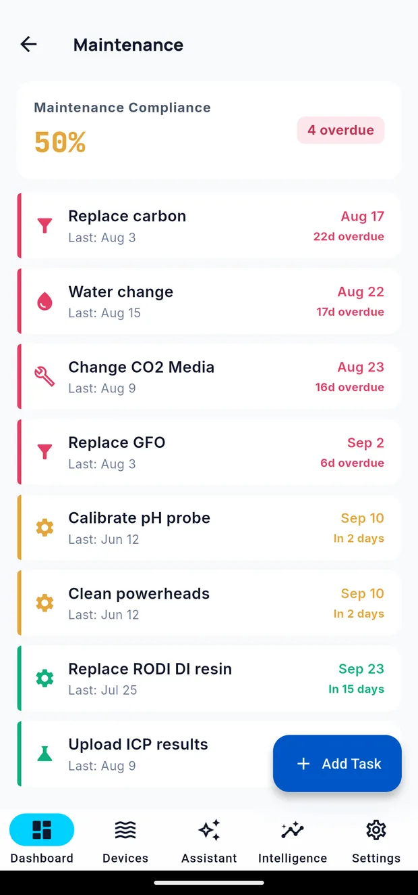

Maintenance
Maintenance holds the recurring jobs a tank needs and the reminders for them. Open it from the shortcut row at the bottom of the dashboard.

The summary
At the top:
- Maintenance Compliance — the proportion of tasks currently done on schedule
- Overdue count — how many tasks have passed their due date
Each task in the list is colour-coded by urgency: overdue, due soon, or scheduled. Every task shows when it was last completed and when it is next due.
Adding a task
Give it a name, an icon, and how often it needs doing in days. Cora works out when it is next due.
Typical tasks:
| Task | Interval |
|---|---|
| Change filter socks | 3–7 days |
| Clean the skimmer cup | 7 days |
| Clean the glass | 7 days |
| Replace carbon or GFO | 30 days |
| Service the return pump | 90–180 days |
| Calibrate probes | 30–90 days |
Reminders
Each task can remind you, and you control the timing:
- How many days before it is due
- What time of day the reminder arrives
Turn reminders off for a task you would rather just see in the list.
Marking a task done
Use the task's Done control, or swipe it. Cora records the completion time and schedules the next occurrence from that moment — so a job done three days late moves the next one out by three days rather than pretending it happened on time.
Snoozing
If you cannot do a job right now, snooze it. It stays in the list in a muted Snoozed state showing its new date, so nothing disappears — you simply are not reminded again until then.
Pausing a task
A task can be made inactive — for equipment you have taken offline, or a job that does not apply this season. It stays in the list, stops being due, and can be reactivated later.
Maintenance and the journal
Completing a task is not the same as writing a journal entry. Maintenance answers "what is due?"; the journal answers "what did I actually do, and what happened next?". If a job was unusual — the pump was full of sand, the socks were black after one day — that belongs in the journal too.
Written for Cora Max 0.28.33 and Cora Mobile 0.5.54.
Still stuck? Email cora@coraiq.tech and we'll help.